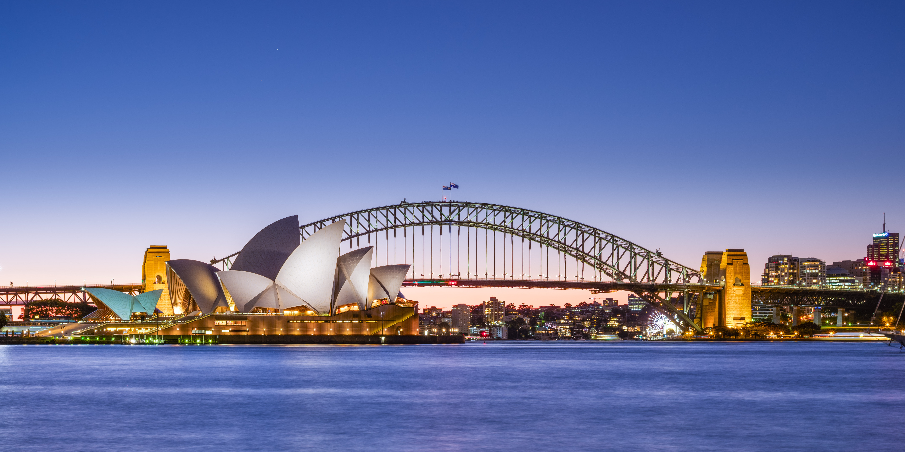
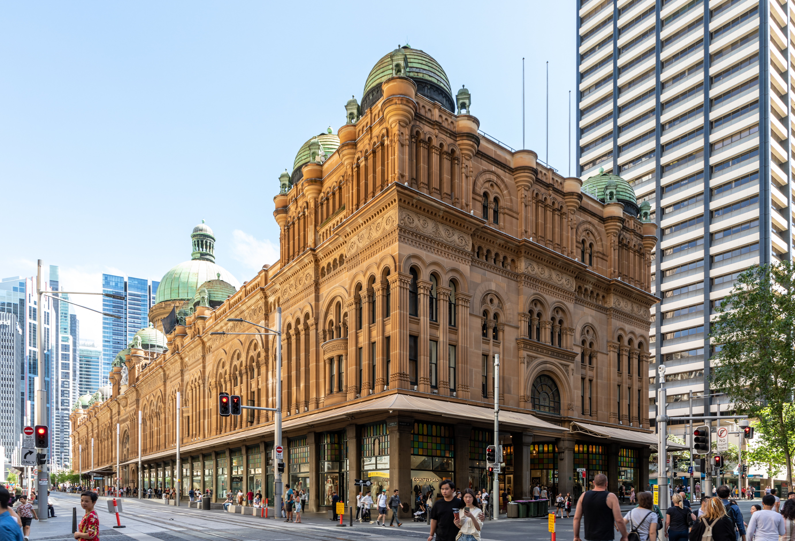
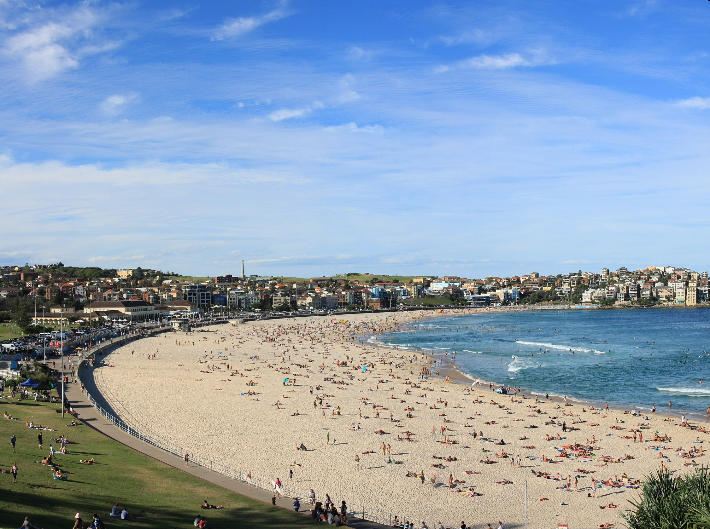

Explore Sydney
Sydney is famous for the Sydney Opera House, Harbour Bridge, Bondi Beach and its vibrant waterfront city life.

Visitors can enjoy ferry rides, shopping, coastal walks, harbour cruises and amazing waterfront dining experiences.
The city is also popular for its beaches, nightlife, iconic skyline and multicultural food scene. Sydney is one of Australia's most recognisable cities, known for its harbour views, famous landmarks, stunning beaches and lively city atmosphere. Visitors can enjoy a mix of culture, shopping, food, sightseeing and outdoor activities all in one destination.

By Benh LIEU SONG (Flickr) - Sydney's Landmarks 2, CC BY-SA 4.0
The Sydney Opera House is one of the most iconic buildings in Australia and a major tourist attraction. Its unique sail-like design makes it one of the most photographed landmarks in the country.

By Original: Dietmar Rabich (Derivative work: Democfest), CC BY-SA 4.0
The Queen Victoria Building is a historic shopping centre in the heart of Sydney. It is known for its beautiful architecture, elegant interior and popular cafes and stores.

By Adam.J.W.C. - Own work, CC BY-SA 2.5
Bondi Beach is a favourite spot for locals and tourists alike. It is perfect for surfing, relaxing by the ocean and walking along the coastal path with beautiful sea views.
Sydney also offers ferry rides, harbour cruises, waterfront dining and excellent public transport, making it an easy city to explore during a short stay or a longer holiday.